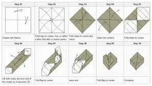

Step 1) Start with a square sheet of paper with the white side facing up. Fold the paper in half horizontally. Crease it well and then unfold it.
Box Step 2 Step 2) Fold the paper in half vertically. Crease it well and then unfold it.
Box Step 3 Step 3) Fold the corner of the paper to the centre. You’ll do this on each of the 4 corners.
Box Step 4 Step 4) Fold the next corner to the centre of the model.
Box Step 5 Step 5) Fold the next corner to the centre of the model.
Box Step 6 Step 6) Fold the final corner to the centre of the model.
Box Step 7 Step 7) Rotate the model 45 degrees so it’s square again.
Box Step 8 Step 8) Fold the top part of the model along the dotted line to the centre.
Box Step 9 Step 9) Fold the bottom part of the model along the dotted line to the centre.
Box Step 10 Step 10) Crease both these folds very well and then unfold them.
Box Step 11 Step 11) These next 2 steps technically aren’t necessary but they make 2 later steps slightly easier. Fold the left part of the model along the dotted line to the centre.
Box Step 12 Step 12) Fold the right part of the model along the dotted line to the centre.
Box Step 13 Step 13) Crease both these folds very well and then unfold them.
Box Step 14 Step 14) Unfold the top and bottom triangles of paper.
Box Step 15 Step 15) Fold the right side of the model to the centre along the dotted line. Part of this crease is already here which will make it a bit easier.
Box Step 16 Step 16) Fold the left side of the model to the centre along the dotted line.
Box Step 17 Step 17) Slowly pull the model open at the top following the dotted lines. The creases here are already made.
Box Step 18 Step 18) When you pull the model open it should take a shape that looks like this. The creases are all already made so everything should fall into place.
Box Step 19 Step 19) Fold the flap of paper down along the dotted line that intersects the two triangles. This will form the edge of the box. Fold the top triangle of paper up a little bit to fit into place at the bottom of the box.
Box Step 20 Step 20) Fold the other side of the box now along the existing creases like you did in steps 17 and 18. The paper should fall into place and give you a shape just like in step 18.
Box Step 21 Step 21) Fold the top flap of paper down along the dotted line to form the edge of the box. Fold the top triangle of paper up a little bit to also fit into the bottom of the box, just like in step 19.
The Completed Origami Box The competed traditional origami box or masu box. If you want to fold a lid for your box you have a couple of options. First you can simply use slightly larger paper and fold the lid exactly the same way you did the box itself. This can be a bit difficult, especially if you’re using standard origami paper like kami where each piece you have is exactly the same size. The other option you have is to fold the box again but in steps 3, 4, 5 and 6 where you fold the corners of the paper don’t fold them all the way to the centre. This will result in a shape that looks like the image below at the end of step 6. Box Lid Variation Then continue to fold the model following the steps above just like you did before. Fold the paper to the centre when it asks you for the following steps. This will give you a slightly larger box that makes a perfect lid. The triangle flaps in the bottom of the box don’t stay in place as well as they do for the bottom so feel free to just use a tiny piece of tape or some glue to hold them there. If you close the box though putting the lid over the bottom it’ll hold it’s shape very nicely even without tape or glue.
